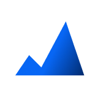

個人インテントは、BtoBハウスリスト上で興味関心の行動シグナルが取得できた個人を可視化する新しいインテントレイヤー。
「市場 → 企業 → 個人」へとインテントデータの解像度を引き上げ、ダイレクトアプローチを実現します。
これまで「どの企業がアクセスしているか」という企業単位の把握にとどまっていたインテントデータが、個人単位の行動把握へと進化。意思決定者・関与者ごとの行動差分を捉え、ダイレクトアプローチを実現します。
Phase 1: Intent広告経由の閲覧シグナルを起点。今後は他ドメイン閲覧／より詳細な興味関心シグナルへ段階的に拡充。

Cookieベース／オプトイン同意を前提とした設計
興味関心の取れた個人を起点に、商談前の準備から、Revenue OS への進化まで。シグナルの精度が高まることで、営業はより適切に意思決定できるようになります。
「企業の中の誰が、何に関心を示しているか」が見えることで、商談前の準備や会話の起点が明確に。担当者の経験や推測に委ねていた「誰へのアプローチか」の判断を、行動シグナルで支援します。
興味関心の高まった瞬間を個人単位で捉えるため、最適なタイミングでアプローチが可能に。意思決定者・関与者ごとの行動差分を把握することで、誰にいつ働きかけるかの判断精度を高めます。
検索インテント・ドメインインテント・ビジターインテント・個人インテント。市場の兆しから企業の検討フェーズ、そして個人の購買意欲まで一貫して捉える顧客理解基盤を構築します。
個人インテントはCookieベースのトラッキングを採用し、ユーザー同意（オプトイン）のもとで動作します。個人特定の精度と、プライバシー保護を前提とした設計を両立しています。
個人インテントを起点に、商談獲得前のマーケティングから、商談化・受注獲得までの一連の流れを支援する営業基盤「Revenue OS」へ。営業体験そのものを、よりワクワクするものへと変えていきます。
個人インテントはCookieベースのトラッキングを採用しており、ユーザー同意（オプトイン）のもとで動作します。ユーザーの同意を得た範囲のみでデータを活用します。
詳細は Clean Data Policy をご覧ください。
本機能はPhase 1のリリースとして、まずIntent広告経由の閲覧シグナルを起点とした個人レベルの行動可視化から提供を開始します。
個人インテントは、Sales Markerの他のインテントレイヤーやAIエージェント機能と組み合わせて活用することで、最大限の価値を発揮します。